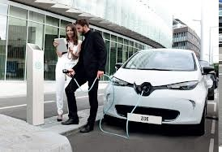
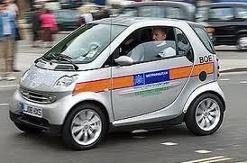
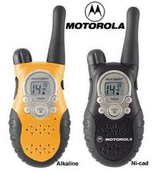

The EV CALLING Channel! Cellphones lack the most important capability that only Radio can provide, and that is the ability to share a single common intercom channel between everyone in range with no a priori knowledge about who is there. Being able to communicate with all surrounding EV drivers whether driving, parked, or charging can build the spirit of community and ease the conflicts of public charging. Besides, you may make new friends!
 Radios while Charging: Imagine if everyone that drove an EV or was plugged into a charging station was also known to be monitoring channel 3 tone 5. Then someone else could give them a call and negotiate sharing or get other info about other potential locations. This is better than leaving cell phone numbers all over the place since everyone within a mile of the charger can be communicating by radio about the situation to everyone.
Why Channel 3 tone 5? Because it is easy to remember since the national average cost of electricity to drive an EV is generally accepted as about 3.5 cents per mile. This simple neumonic not only helps us remember the channel, but also lets us brag a bit about the low cost of driving an EV. For reference, unlike CB radios (channel 9), the emergency channel (if there is one) on FRS is suggested as channel 1, no tone. By using channel 3 tone 5, we can chat EV's all we want without bothering other drivers.
CALLING CQ: Generally all radio communications assume every station has a callsign. This can be your first name, initials, or other monicer. All radio communications begin with the station called, followed by the station calling such as "Hey Jerry, this is Bob, are you around?". But the real value of radio is the ability to make random contact with others in range. In that case, the term SEEK-YOU(CQ) is used. For example "CQ EV, this is Bob in Tyson's corner...". Using the "CQ EV" identifies you as one of the group of EV drivers looking for contact.
 The FRS band: The FCC authorized the 14 channels for FRS in 1996 and since then these radios have been sold by the millions. They are available everywhere in the electronics section of most retailers. Costs as low as $19 a pair were typical at their peak a few years back. Since then higher power versions with more channels (22) and rechargeable batteries have maintained a higher price from $39 to $89 a pair. These higer power models theoretically require an FCC GMRS license to operate, but when operted on FRS channels (1-7) they are forced to the same 1/2 watt limit of FRS.
Range: The FRS radios were originally sold as "2 mile" radios. But then marketing hype has escallated the typical claims up to 8, 16 or 32 miles, though nothing has changed and they are still the same 1/2 watt radio on FRS channels. It is true, that the theoretical range can be as high as 1000 miles if you can find a mountain high enough to see that far, so it is important to remember the value of height-above-local-terrain when trying to make a radio call. Your range can easily be 10 miles when you top a hill, but can also be only 1/4 mile in dense city buildings. Being in the open and in the clear also helps. So giving a "CQ" call when toping a hill is always a good idea.
 Radio Choice: Although there are hundreds of FRS designs, from kids toys, to discreet tiny models for a purse, to macho models, the prefered radio for EV usage should consider these factors. You want one with a true ON/OFF switch (usually on a volume control knob) as shown here. This makes sure that the radio is really OFF while it sits in the car 99.9% of the time not in use. Those with "on/off" buttons are really just sleeping and consuming battery power so they can "sense" when the button is pushed. Similarly, rechargable battery models with drop-in chargers are only good for radios used every day. These batteries loose charge while just sitting. They will be great when every EV driver always carries a radio every day, but for just occasional EV events, the models with 3 or 4 "AA" sized batteries might be best.
PATIENCE: It will take time for EV RADIO to catch on. But most families probably already have an FRS radio, so why not keep one in the EV for use on the road. And don't forget, that if no one is calling "CQ" then there is nothing to hear no matter how many people are listening. Call CQ when you think other EV'ers are nearby. Spread the word and look for other EV'ers on the road on Channel 3 Tone 5.
Thanks,
Bob Bruninga, WB4APR
lastname@usna.edu
|
|
|